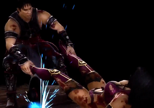
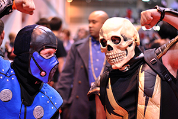

Mortal Kombat Memories:
The Beginning
Mortal Kombat (commonly abbreviated "MK") is a series of fighting games created by Ed Boon and John Tobias. The first four renditions and their updates were developed by Midway Games and initially released on arcade machines, and later to home consoles. The arcade titles were later picked up by Acclaim Entertainment for the home console conversions. Beginning with Mortal Kombat: Deadly Alliance, Midway Games exclusively created home versions of Mortal Kombat up until Mortal Kombat vs. DC Universe. Following Midway's bankruptcy, the franchise was picked up by Warner Bros. in July 2009 and became a part of the Warner Bros. Interactive Entertainment. The most recent title is Mortal Kombat which is an alternate retelling of the events from the first three games in the series.
The development of the first game was originally based on the actor martial artist Jean-Claude Van Damme, but that idea fell through and Mortal Kombat was born instead. As a result of its success, Mortal Kombat has spawned many sequels and has been spun off into several action-adventure games, films (animated and live-action with its own sequel), and television series (animated and live-action). Other spin-offs include various comic book series, a card game and a live-action tour.
The series is known for its high levels of bloody violence, including, most notably, its Fatalities—finishing moves, requiring a sequence of buttons to perform, which, in part, led to the creation of the ESRB. The series name itself is also known for using the letter "K" in place of "C" for the hard C sound, thus intentionally misspelling the word "combat," as well as other words with the hard C sound within later games in the series. Early games in the series were especially noted for its realistic digitized sprites (which differentiated it from its contemporaries' hand-drawn sprites), as well as an extensive use of palette swapping to create new characters.
Finishing moves
A defining and best-known feature of the Mortal Kombat series is a finishing move called Fatality. An original idea behind the Fatalities was to give gamers a free hit at the end of the fight. The basic Fatalities are finishing moves that allow the victorious characters to end a match in a special way by murdering their defeated, defenseless opponents in a gruesome manner, usually in the predefined ways exclusive for the given character. The only exception from this is Mortal Kombat: Armageddon , which instead features the Kreate-A-Fatality, allowing the players to perform their own Fatalities by conducting a series of violent moves chosen from a pool that is common for all characters.
Other finishing moves in the various Mortal Kombat games include Animality (introduced in Mortal Kombat 3 ) turning a victor into an animal to violently finish off the opponent, Brutality (introduced in Ultimate Mortal Kombat 3) which is bashing an opponent into pieces with a long combo of hits, and Stage Fatalities/Death Traps (introduced in the original "Mortal Kombat Pit Stage, and later made more difficult in "Mortal Kombat II" by requiring specific and different button sequences to be pressed) utilizing parts of certain stages to execute a lethal finishing move. Mortal Kombat: Deception added the Hara-Kiri, a self-Fatality to allow the losers to engage in a suicide-based finishing move, enabling a possible race between both players to see if the winning player can finish off the losing player before the losing character can kill himself or herself first.
Friendship moves, introduced in Mortal Kombat II and involving displays of friendship towards the enemy, instead of killing, were made as a comical response to the attention the series gathered due to its violent content. A similar to Friendship is Babality also introduced in MKII and turning the opponent into a baby. Mortal Kombat 3 saw Mercy, where the victor gives a little health to the opponent and the fight then resumes.
Plot
The series takes place in a fictional universe consisting of six surviving realms which, according to in-game backstories, were created by the Elder Gods. The Mortal Kombat: Deception manual described the six realms as: "Earthrealm, home to such legendary heroes as Liu Kang, Kung Lao, Sonya Blade, Johnny Cage, and Jax, and also under the protection of the Thunder God Raiden; Netherrealm, the fiery depths of which are inhospitable to all but the most vile, a realm of demons and shadowy warriors; Outworld, a realm of constant strife which Emperor Shao Kahn claims as his own; Seido, The Realm of Order, whose inhabitants prize structure and order above all else; The Realm of Chaos, whose inhabitants do not abide by any rules whatsoever, and where constant turmoil and change are worshipped; and Edenia, which is known for its beauty, artistic expression, and the longevity of its inhabitants." The Elder Gods decreed that the denizens of one realm could only conquer another realm by defeating the defending realm's greatest warriors in ten consecutive Mortal Kombat tournaments.
The first Mortal Kombat game takes place in Earthrealm where seven different warriors with their own reasons for entering participated in the tournament with the eventual prize being the continued freedom of their realm, threatened with a takeover by Outworld. Among the established warriors were Liu Kang, Johnny Cage, and Sonya Blade. With the help of the Thunder God Raiden, the Earthrealm warriors were victorious and Liu Kang became the new champion of Mortal Kombat. In Mortal Kombat II, unable to deal with Shang Tsung's failure, Outworld Emperor Shao Kahn lures the Earthrealm warriors to the Outworld where the Earthrealm warriors eventually defeat Shao Kahn. By Mortal Kombat 3, Shao Kahn revives Edenia's (now a part of his Outworld domain) former queen Sindel in Earthrealm, combining it with Outworld as well. He then attempts to invade Earthrealm but is ultimately defeated by the Earthrealm warriors again. After Kahn's defeat, Edenia was freed from Kahn's grasp and returned to a peaceful realm, ruled by Princess Kitana. The following game, Mortal Kombat 4, features the former elder god Shinnok attempting to conquer the realms and attempting to kill the thunder god Raiden. However, he is also defeated by the Earthrealm warriors.
In Mortal Kombat: Deadly Alliance, the sorcerers Quan Chi and Shang Tsung join forces to conquer the realms and subsequently become the antagonists. By Mortal Kombat: Deception, after several fights, the sorcerers emerge victorious having killed most of Earthrealms' warriors until Raiden steps forth to oppose them. The Dragon King Onaga, who had been freed by Reptile at the end of Mortal Kombat: Deadly Alliance, had deceived Shujinko, the protagonist of Mortal Kombat: Deception, into searching for six pieces of Kamidogu, the source of Onaga's power. Onaga then confronted the alliance of Raiden, Shang Tsung, and Quan Chi and thus obtained Quan Chi's amulet, the final piece of his power, becoming the antagonist. Only a few warriors remained to combat against the Dragon King and his forces. Shujinko eventually triumphed over the Dragon King and removed his threat to the Mortal Kombat universe.
In Mortal Kombat: Armageddon the catastrophe known as Armageddon starts. Centuries before the first Mortal Kombat, Queen Delia foretold the realms would be destroyed in an event known as Armageddon. King Argus had his sons, Taven, the protagonist of the game, and Daegon, put into incubation who would one day be awakened to save the realms from Armageddon. In the end, however, because Blaze's design has been corrupted by Onaga's holy men, Taven's victory over Blaze does not destroy the combatants or strip them of their powers, instead increasing the powers of the fighters, potentially exacerbating the onset of Armageddon. As a result, Taven will make it his duty as a new god to delay Armageddon until a solution can be found.
In Mortal Kombat (2011), it is revealed that the battle between the warriors of the six realms culminated into only two survivors: Shao Kahn and Raiden. Badly beaten, Raiden had only one last move he could make to prevent Shao Kahn from claiming the power of Blaze. He sends visions of the entire course of the Mortal Kombat timeline to himself in the past right before the tenth Mortal Kombat tournament (first game). This transfer of information to his former self causes a rift in time causing the Armageddon timeline to be erased and a new "reboot" timeline to be introduced, with a new outcome of Mortal Kombat history to be written. But this story leads to even worse unforeseen events. It ends with many of the main game characters dying at the hands of Queen Sindel and eventually Raiden accidentally kills Liu Kang in self-defense. But eventually the Elder Gods aid Raiden in killing Shao Kahn and saving Earthrealm. But as the scene goes on it is later revealed that this was all a plan by Lord Shinnok and Quan Chi.
Development history
Origins:
Mortal Kombat started development in 1991 with only four people: Ed Boon, John Tobias, John Vogel and Dan Forden. In 2009, Boon said: "The first Mortal Kombat game was 4 guys, literally, one programmer, myself (Boon), two graphics guys (Tobias and Vogel), and a sound guy (Forden) was the entire team, literally." Originally, Boon and Tobias were approached to create a video game adaptation of the 1992 film Universal Soldier starring actor and martial artist Jean-Claude Van Damme, with a digitized version of the action star fighting villains. Intending to make a game "a lot more hard edge, a little bit more serious, a little bit more like Enter the Dragon or Bloodsport" than Street Fighter II, Boon and Tobias decided to continue their project even after the deal to use the Bloodsport license fell through. One of their own characters, Johnny Cage, became "a spoof on the whole Van Damme situation."
Tobias said that his inspirations for the game's story and characters came from the Chinese mythology and some of the stories and rumored events about the Shaolin monks. Regarding the film Big Trouble in Little China, Tobias wrote that although this movie "kind of Americanized my obsession for supernatural kung fu films from China, it was not my biggest influence. My biggest influences came from Tsui Hark films -- Zu Warriors & The Swordsman. We had to get them from bootleggers in Chgo's Chinatown."
Ed Boon recalled that for six out of the eight months while they were in production of the original Mortal Kombat, "nobody could come up with a name nobody didn't hate." Some of the names suggested included "Kumite", "Dragon Attack", "Death Blow" and just "Fatality". Someone had written down "combat" on the drawing board for the names in Boon's office and then someone wrote a K over the C, according to Boon, "just to be kind of weird." Steve Ritchie, a pinball designer at that time, was sitting in Boon's office and saw the word "Kombat" and said to Boon, 'Why don't you name it Mortal Kombat?' and that name "just stuck." Since then, the series uses the letter "K" in place of "C" for various words containing the hard C sound. According to Boon, during the MK games' development they usually spell the words correctly and only "correct it" when one the developers points out they should do it.
Graphics

The original Mortal Kombat was developed with digitized sprites based on actors, as opposed to animated cartoon graphics. Early Mortal Kombat games were known for their extensive use of palette swap, a practice of re-coloring certain sprites to appear as different characters which was used for the ninja characters. In fact, many of the most popular characters have originated as a simple palette swaps. In the very first game, the male ninja fighters were essentially the same character; only the colors of their attire, fighting stance, and special techniques indicated the difference. Later games added other ninjas based on the same model, as well as several female ninja color swap characters (beginning with Kitana) initially also using just one base model (since Mortal Kombat II). All of them gradually became very different characters in the following installments of the series.
Mortal Kombat 4 brought the series into 3D, replacing the digitized fighters of previous games with polygon models. The team switched from digitized actors to motion capture technology: "A martial-arts expert with as many as 100 electronic sensors taped to his body sends precise readings to a camera as he goes through his moves—running, jumping, kicking, punching. The action is captured, digitized and synthesized into a 'naked' wire-frame model stored in a computer. Those models can then be 'dressed' with clothing, facial expressions and other characteristics by means of a computer technique called texture mapping."
Fighting Games
The original Mortal Kombat game was released for arcades during October 1992, having since been ported to several console and home computer systems by Probe Software and released by Acclaim Entertainment. The sequel, Mortal Kombat II, was released for arcades in 1993, featuring an increased roster and improved graphics, then ported to the numerous home systems in 1993-1995 by Probe Entertainment and Sculptured Software, released again by Acclaim; it was rereleased in 2007 for the PlayStation 3. Mortal Kombat 3 followed in 1995 in both arcade and home versions, later getting two updates which expanded the number of characters and other features from the game: Ultimate Mortal Kombat 3, published in the same year, and Mortal Kombat Trilogy the next one. The following game, Mortal Kombat 4, was released in 1997, and ported to the PlayStation, Nintendo 64 and PC, while an update named Mortal Kombat Gold was released exclusively for the Dreamcast in 1999.
While to this point, Mortal Kombat games were only titled with their installment number, starting with Mortal Kombat: Deadly Alliance in 2002, the series' naming scheme changed to favor the use of sub-titles instead of the previously usual numbering. It was also at this point that the series started being targeted at consoles only, with Mortal Kombat 4 being the last game in the series to ever be released for the arcades and PC. Deadly Alliance was released initially for the Xbox, PlayStation 2 (PS2) and GameCube. The Game Boy Advance port titled Mortal Kombat: Tournament Edition was released in 2003. The next sequel was the 2004 Mortal Kombat: Deception, released for the PS2, Xbox and GameCube. Its port for the PlayStation Portable, Mortal Kombat: Unchained, was released by Just Games Interactive in 2006. Mortal Kombat: Armageddon was published in the same year for the PS2, Xbox, and in 2007 on the Wii. On September 29, 2008, Midway released the Mortal Kombat Kollection, an anthology of the three then-most recent titles to the main franchise: Mortal Kombat: Deception, Mortal Kombat: Shaolin Monks, and Mortal Kombat: Armageddon. Mortal Kombat vs. DC Universe, a crossover between the Mortal Kombat franchise and DC Universe released in 2008 for the PlayStation 3 and Xbox 360.
A new main game in the series, a reboot known as simply Mortal Kombat was released on April 19, 2011 by Warner Bros. Games' Chicago studio, formerly Midway Games Chicago, now known as NetherRealm Studios.
Action-adventure games
Besides the fighting games, there are three action titles that work as spin-offs from the Mortal Kombat storyline. Mortal Kombat Mythologies: Sub-Zero was released in 1997 for the PlayStation and Nintendo 64; its story is focused on the first incarnation character of Sub-Zero and is focused in the timeline of before the first Mortal Kombat game. The next action game was Mortal Kombat: Special Forces released in 2000 for the PlayStation; it is an action game starring Major Jackson Briggs in his mission to destroy the Black Dragon. Mortal Kombat: Shaolin Monks was released in 2005 for the PS2 and the Xbox; starring Liu Kang and Kung Lao and telling an alternate version of the events between the first and second Mortal Kombat games. Mortal Kombat: Fire & Ice', which would star Scorpion and again Sub-Zero, was cancelled when Paradox Development (Midway Studios – Los Angeles), the creators of Shaolin Monks, "couldn’t do it in time and under budget."
Films
Mortal Kombat was adapted into two major motion pictures, Mortal Kombat (1995), and Mortal Kombat: Annihilation (1997), both released by New Line Cinema (eventual corporate sibling, and later label, of Mortal Kombat rights holder Warner Bros.). Neither film was screened for critics prior to theatrical release. The first movie was released on August 18, 1995, grossing $23 million on its first weekend. Mortal Kombat, despite mixed reviews from critics, became a financial success, eventually grossing $70 million in the U.S. (and over $122 million worldwide) while jump starting the Hollywood career of its director Paul W. S. Anderson. That momentum did not carry over into John R. Leonetti's Annihilation, however, which suffered from a poor reception by critics and fans alike, grossing only $36 million in the U.S. and $51 million worldwide, compared to the first movie's worldwide intake of $122 million. In 2010, director Kevin Tancharoen released an eight-minute Mortal Kombat film titled Mortal Kombat: Rebirth. Ryan said later that the short was made as a proof of concept for Tancharoen's pitch of a reboot movie franchise to Warner Brothers. Tancharoen later confirmed that while the short is entirely unofficial, it does feature the writing of Oren Uziel, who was rumored to be writing the screenplay for the third Mortal Kombat movie. On September 29, 2011, New Line Cinema and Warner Bros. announced that Tancharoen has signed on to direct a third big-screen adaptation of Mortal Kombat from a screenplay written by Uziel.
Literature
Several Mortal Kombat comic books were based on the video game series, including the official Mortal Kombat and Mortal Kombat II comic books created by Tobias and advertised in the attract modes on early versions of the first two games. In 1994, Malibu Comics launched an official MK comic book series, spawning two six-issue series ("Blood and Thunder" and "Battlewave"), along with several miniseries and one-shot special issues dedicated to specific characters, until its publication ended in August 1995. Two more comics were also made as tie-ins for Mortal Kombat 4 and the DC Universe crossover game. Jeff Rovin penned a novelization of the first Mortal Kombat game, which was published in June 1995 in order to coincide with the release of the movie. Novelizations of the both Mortal Kombat movies were also published, written by Martin Delrio and Jerome Preisler.
Music
Mortal Kombat: The Album, a techno album based on the first game was created for Virgin America by Lords of Acid members Praga Khan and Oliver Adams as the Immortals in 1994. Its iconic theme "Techno Syndrome", incorporating the "Mortal Kombat!" yell first shown in the Mortal Kombat commercial for home systems, was first released in 1993 as a single and was also used as a theme music for the Mortal Kombat film series. Each movie had their own soundtracks, as had the second video game (Mortal Kombat II: Music from the Arcade Game Soundtrack). In addition, samples from the video games have occurred in music, most notably music by KMFDM (also included in the movie's soundtrack). The 2011 video game saw the release of Mortal Kombat: Songs Inspired By The Warriors, a new soundtrack album featuring electronic music by various artists.
Shows
The franchise sparked two television series, the 1996 cartoon series Mortal Kombat: Defenders of the Realm and the 1998 live-action series Mortal Kombat: Konquest. Neither series ran for more than one season.] In 2010, Warner Premiere ordered a 10-episode web series inspired by the Rebirth short, titled Mortal Kombat: Legacy and also directed by Kevin Tancharoen. The series was released for free on YouTube starting in April 2011, promoted by Machinima.com.
Miscellaneous
An animated prequel to the first movie, titled Mortal Kombat: The Journey Begins, was released direct-to-video in 1995. The stage show Mortal Kombat: Live Tour was also launched at the end of 1995. The tour expanded to 1996, and featured Mortal Kombat characters in a theatrical display on stage. Brady Games produced a collectible card game (CCG) called Mortal Kombat Kard Game in 1996. Score Entertainment's 2005 CCG Epic Battles also used some of the Mortal Kombat characters.
Reception and cultural impact
{kind=link}
Ed Boon reported that the Mortal Kombat series have sold 26 million copies by 2007. The 2008 edition of Guinness World Records Gamer's Edition awarded the Mortal Kombat series with seven world records, including "Most Successful Fighting Game Franchise". Many publications described it as one of the most important and also most violent series in the history of video games. In 2009, GameTrailers ranked Mortal Kombat as the ninth top fighting game franchise and as the seventh bloodiest series of all time.[148] In 2011, the staff of GameSpy wrote "its place in fighting game history is undeniable." In 2012, Complex ranked Mortal Kombat as 37th best video game franchise overall, commenting on its "legendary status in video game history." Mortal Kombat as a series was also ranked as the goriest video game ever by CraveOnline in 2009 and G4 in 2011; including it on their list of the goriest games, Cheat Code Central commented that "Mortal Kombat had enough gore to simultaneously offend a nation and change gaming forever."
According to IGN, during the 1990s "waves of imitators began to flood the market, filling arcades with a sea of blood from games like Time Killers, Survival Arts, and Guardians of the Hood. Mortal Kombat had ushered in an era of exploitation games, both on consoles and in arcades, all engaging in a battle to see who can cram the most blood and guts onto a low-res screen."[4] Notable Mortal Kombat clones, featuring violent finishing moves and/or digitized sprites, included Bio F.R.E.A.K.S., BloodStorm, Cardinal Syn, Eternal Champions, Kasumi Ninja, Killer Instinct, Mace: The Dark Age, Primal Rage, Street Fighter: The Movie, Tattoo Assassins, Thrill Kill, Ultra Vortek, Midway's own War Gods and Way of the Warrior, among many others (even the Japanese game Tsuukai Gangan Kohshinkyoku was localized in the U.S. as Aggressors of Dark Kombat). Of all these, only Eternal Champions and Killer Instinct achieved a considerable success and were followed by sequels (Eternal Champions: Challenge from the Dark Side and Killer Instinct 2). In a 2009 poll by GamePro, 21% of voters rated Mortal Kombat as their favorite fighting game series, ranking it third, behind Street Fighter and Tekken. In 2012, Capcom's Street Fighter producer Yoshinori Ono said he is getting a lot of requests for Street Fighter vs. Mortal Kombat and understands why people want it, "but it’s easier said than done. Having Chun Li getting her spine ripped out, or Ryu’s head bouncing off the floor….it doesn’t necessarily match."
The series and its characters are also referenced in the various other works of popular culture, such as in the title of Powerglove's debut album Metal Kombat for the Mortal Man and the Workaholics episode "Model Kombat". According to Complex in 2012, "Years ago, MK became a phenomenon far outside gaming circles alone. Its name has become recognizable enough to be name dropped on sitcoms (Malcolm in the Middle and Married... With Children), found in movies (Christian Slater plays MK4 in Very Bad Things), and used as part of cultural studies (see Justine Cassell and Henry Jenkins' book From Barbie to Mortal Kombat: Gender and Computer Games)."
Controversy
The series was subject of a major video game controversy and several court cases, largely related to its extremely violent content, especially in relation to the original game which paved a way for the introduction of the ESRB (Entertainment Software Rating Board) game rating system in 1994 as well as Australian Classification Board; Mortal Kombat was the first game to receive a mature ESRB rating. Various games in the series were banned in a number of countries. In 2011, CNN ranked this as the second biggest video game related controversy, adding that "the gore also helped it to become one of the most popular video games of all time."] In 2012, Time commented that Mortal Kombat has become "the bogeyman for anti-games activists and politicians [...] But the reason the 1992 classic remains seminal is because it broke an implicit taboo about what was okay to put in a game."
Read full article on wikipedia